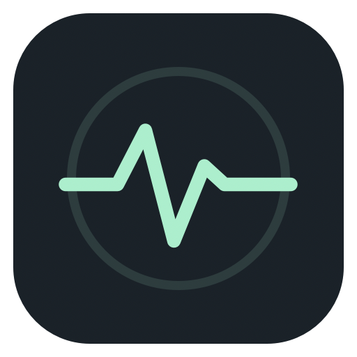
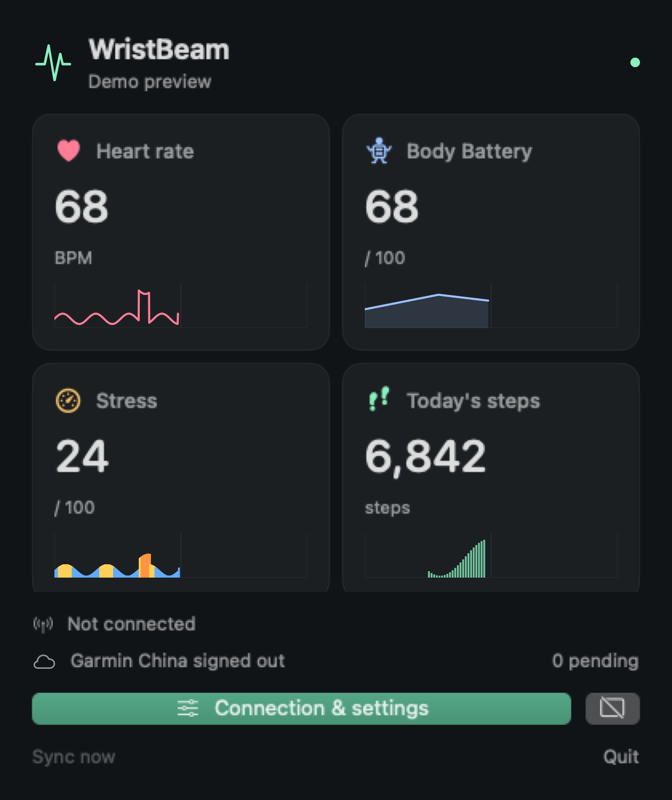
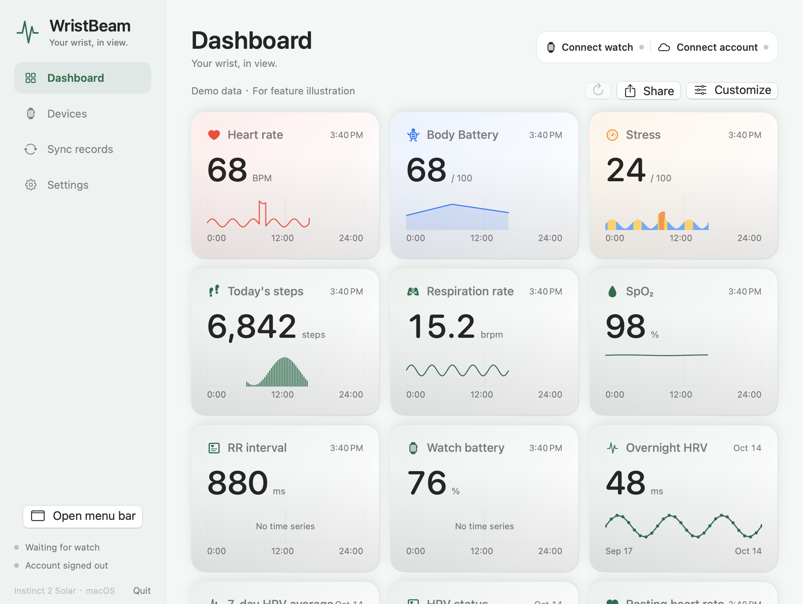
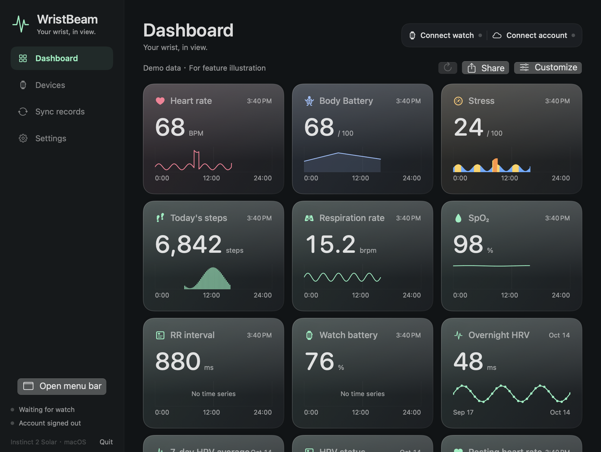
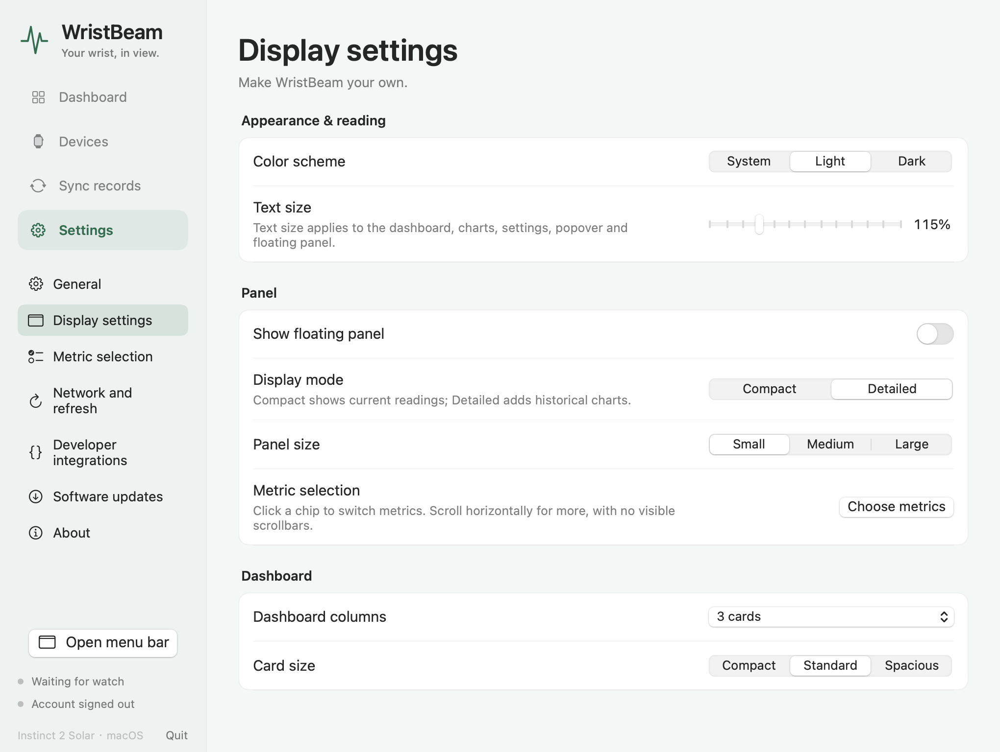

WristBeam
Native macOS companion · MIT
Your wrist, in view.
The menu bar, a quiet floating panel, and a daily dashboard.


WristBeam
Light · dark · system
For every part of your day.
Daily curves, interval bars, and a layout that fits your screen.


WristBeam
Make space for your data
Your metrics.
Your places.
One grouped table. Three independent display surfaces.
DashboardFloating panelMenu bar
Search, expand a group, select all or clear it. Only metrics with received data appear.
